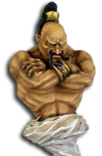

Introduction
Rencontrez Afaaq ! Le djinn qui sera votre fidèle compagnon au cours de vos aventures à travers SoA et ToB. Maintenant disponible pour Icewind Dale : Enhanced Edition et aussi Enhanced Edition Trilogy (EET) !
Contenu
- Le djinn Afaaq qui agit comme votre "Septième membre du groupe"
- Vaste contenu de dialogue entre Afaaq et le protagoniste
- Bavardages avec chacun des PNJ originaux de Bioware/Beamdog (toujours en cours)
- Interjections et commentaires
- Un dialogue approfondi avec Afaaq, initié par le joueur
- Jusqu'à cinq nouvelles quêtes intéressantes
- Six nouvelles zones
- Quelques artefacts uniques
- Plusieurs easter eggs 😉
Visitez les Forums de SHS ou les Forums de Beamdog si vous avez des questions, ou téléchargez la dernière version.
Installation
C'est un mod WeiDU, ce qui signifie qu'il est très facile à installer. Il suffit de décompresser l'archive du mod dans le répertoire d'installation de votre jeu et de lancer soit "setup-DjinniCompanion.exe" (Windows) ou "setup-DjinniCompanion" (macOS). Suivez les instructions et vous êtes prêt à commencer.
Pour désinstaller, lancez "setup-DjinniCompanion.exe" à nouveau et suivez les instructions.
Compatibilité et Ordre d'Installation
Le mod requiert que vous ayez Baldur's Gate II: Throne of Bhaal, Baldur's Gate Trilogy (BGT), Baldur's Gate II: Enhanced Edition ou Icewind Dale: Enhanced Edition installé. Enhanced Edition Trilogy (EET) est aussi supporté.
Vous pouvez installer ce mod à tout moment dans votre jeu avant de faire les quêtes Franc-marché, mais je vous suggère de l'installer tôt pour augmenter les chances de déclenchement d'une certaine quête.
Les mods suivants doivent être installés AVANT ce mod, si vous voulez les utiliser :
- "Ascension" de Westley Weimer
- "Les roues de la prophétie" de DavidW
- Quest Pack et son composant secondaire "Révision des épreuves des enfers" de SimDing0
Les mods suivants seront pris en compte si vous les installez avant ce mod :
- Unfinished Business et son composant secondaire "Kalah et ce qui lui avait été promis"
- Infinity Animations et son composant secondaire "Génies Distincts"
- Fabrication de golems pour lanceurs de sorts
Le mod modifie un certain nombre de ressources originales du jeu. Pour assurer la plus grande compatibilité avec les mods existants, il doit être installé le plus tard possible. Si vous rencontrez un bug, veuillez le poster soit sur les Forums de SHS ou sur les Forums de Beamdog.
Mod Components
-
Le composant principal se décline en deux possibilités :
Version complète : (recommandé) Ce composant installe le djinn Afaaq avec des quêtes, de nouvelles cartes, de nombreuses interjections, des commentaires et des bavardages avec le protagoniste ainsi que tous les PNJs Bioware/Beamdog.
Version allégée : Ce composant installe une version dépouillée du mod composée uniquement du djinn Afaaq et de sa lampe magique. Choisissez cette version si vous souhaitez simplement obtenir plus de puissance de combat dans vos aventures.
-
Version IWD:EE : Ce composant est plus ou moins le même que la Version allégée, mais peut être installé dans Icewind Dale : Enhanced Edition. Il fournit une version dépouillée du mod composée du djinn Afaaq, de sa lampe magique et d'un simple scénario pour pimenter l'aventure.
Note : Vous devriez éviter d'installer ce composant si vous prévoyez d'intégrer IWD:EE dans Enhanced Edition Trilogy pour minimiser les conflits potentiels.
-
Accélérateur de bavardages : (Version complète uniquement) Vous permet de contrôler la fréquence à laquelle une bavardage doit être déclenchée par le djinn. Les valeurs possibles vont de 15 min. à 120 min. (La valeur par défaut est de 60 minutes).
Note : seules les bavardages entre le djinn et le protagoniste sont affectées.
-
Supprimer la bande-son de bavardage d'Afaaq : (Version complète uniquement) Par défaut, une courte bande-son orientale sera jouée chaque fois que le djinn entame une conversation avec le protagoniste. Ce composant désactive la bande son.
-
Portrait de djinn alternatif par Ulb : Choisissez ce composant si vous voulez remplacer le portrait par défaut du djinn Afaaq par une version alternative. (Preview)
-
Désactiver la quête de IWD:EE : (Version IWD:EE uniquement) La quête, qui est liée à la présence du djinn dans le groupe, comprend un certain nombre de combats difficiles. Choisissez ce composant si vous voulez passer entièrement cette quête.
-
Ajouter les créatures de Infinity Animation : (Version complète uniquement) Ce composant ne sera déclenché que si le mod "Infinity Animations" ; et son sous-composant "Génies Distincts" ; ont été installés. Il remplace quelques animations de créatures par des versions plus naturelles.
Détails
Afaaq est un djinn – un génie du Plan Elémentaire de l'Air. Il est très vieux, même en termes de génie. Les nombreux événements dont il a été témoin au cours de sa longue vie ont laissé des traces sur sa personnalité. Il semble quelque peu réservé et rayonne d'une aura mélancolique, parfois même lugubre. Afaaq est plus sérieux que les autres de son espèce et a tendance à parler d'une manière assez longue et alambiquée. Il respecte la sagesse et l'ouverture d'esprit, mais tolère aussi, dans une certaine mesure, les comportements imprudents. Tout le reste, il peut vous le dire lui-même.
Lorsque vous le rencontrez pour la première fois, il est équipé de son cimeterre enchanté préféré, dispose d'une petite variété de sorts et de quelques capacités innées inhabituelles. Le djinn gagne de l'expérience comme le ferait un membre du groupe et monte automatiquement de niveau. Selon les choix que vous ferez au cours du jeu, il peut devenir encore plus utile plus tard.
Statistiques initiales
- Classe : Guerrier/Mage de niveaux 10/11
- Alignement : Chaotique Bon
- Force : 15
- Dextérité : 16
- Constitution : 13
- Intelligence : 15
- Sagesse : 16
- Charisme : 11
Si vous voulez en savoir plus, il suffit de lui parler quand il est dans les environs ou dans sa lampe magique. Il se fera un plaisir de répondre en détail à la plupart de vos questions.
Foire Aux Questions (Alerte au spoiler !)
Q: Où est-ce que je peux trouver le djinn ?
- (Baldur's Gate II) Vous trouverez le djinn au cours de vos aventures à Franc-Marché.
- (Icewind Dale) Vous pouvez le trouver quelque part dans l'Oeil du Dragon.
Q: Pourriez-vous être plus précis sur l'endroit où je peux trouver le djinn ?
- (Version complète) La quête pour trouver le djinn sera déclenchée lorsque vous attaquerez Adratha, la vendeuse de potions du bosquet aux druides. Pour la trouver, entrez dans le bosquet aux druides et cherchez une maisonnette dans la partie supérieure droite de la carte. Elle est en fait un rakshasa déguisé.
- (Version allégée) Vous pouvez trouver le djinn après avoir tué Adratha, la vendeuse de potions du bosquet aux druides.
- (IWD:EE Version) Le djinn est en possession de Yxunomei, l'actuel dirigeant de l'Œil de Dragon.
Q: Quel est la différence entre la version complète et la Version allégée d'Afaaq ?
- La version complète contient tout ce que j'ai annoncé dans le readme et cette FAQ, qui comprend des bavardages, des interjections, des commentaires et plusieurs quêtes. La Version allégée est juste une version dépouillée du djinn sans contenu supplémentaire. J'ai ajouté cette option en bonus pour les personnes qui le connaissent déjà à fond ou qui veulent qu'il accompagne le groupe dans Icewind Dale.
Q: Quelle est l'utilité du djinn s'il ne se comporte pas comme un membre régulier du groupe ?
- Puisqu'il préfère vous suivre plutôt que de se joindre à votre groupe, vous n'avez pas accès à son inventaire ou à son écran de caractéristiques. Sa sélection de sorts est également fixe, bien qu'elle puisse s'étendre à un certain moment du jeu. Pour compenser ces limitations, je lui ai donné de nombreuses capacités et options utiles pour interagir avec lui. Il a également un menu PID étendu, qu'il soit à l'intérieur ou à l'extérieur de sa lampe. Il y a encore plus, mais vous devriez le découvrir par vous-même. 😉
Q: A-t-il une quête ?
- (Version complète uniquement) Pas seulement une. Au cours du jeu, vous pouvez participer à un maximum de cinq quêtes liées au djinn, à sa nature et à son passé. Certaines quêtes sont obligatoires, d'autres sont optionnelles ou dépendent de la façon dont vous avez résolu une quête précédente.
Q: Est-ce qu'il s'entend avec les personnages mauvais ?
- Afaaq est généralement tolérant envers les personnages de n'importe quel alignement. Il ne sera pas toujours d'accord, mais à moins que vous n'agissiez de façon très abusive envers lui, il n'y aura pas de conflit. Il peut même être utile de l'emmener avec un groupe maléfique au moins une fois, car certaines options de quête ne sont disponibles que pour les protagonistes mauvais.
Q: peut-on romancer le djinn ?
- Non, vous ne pouvez pas. Mais il y a une sorte de chemin de l'amitié. Pendant qu'Afaaq partage votre compagnie, son respect pour vous peut croître ou diminuer, selon la façon dont vous gérez certains événements sur votre chemin. C'est très important pour certains événements qui se produiront plus tard.
Q: Comment s'entend-il avec les autres PNJ ?
- Actuellement, il n'y a pas beaucoup d'interaction avec la plupart des PNJs, donc il s'entendra très bien avec tout le monde. Cependant ça va éventuellement changer. Il s'entendra mieux avec les personnages aux vues similaires, mais il tolérera aussi certains des PNJ les plus maléfiques. Cela ne veut pas dire qu'il n'y aura pas de surprises si vous avez Korgan, Edwin ou d'autres PNJ maléfiques de Bioware/Beamdog dans votre groupe.
Q: Y aura-t-il du contenu crossmod ?
- Le système de bavardages est conçu pour supporter le contenu crossmod. Donc oui, c'est possible avec peu de restrictions. Mais ma première priorité est d'ajouter des bavardages pour tous les PNJs officiels.
Q: Je veux qu'Afaaq se retire dans sa lampe. Comment je fais ça ?
- Vous pouvez lui demander de le faire. Cliquez sur le bouton "Dialogue" ; (ou appuyez sur F1) et cliquez sur votre djinn. Il va lancer un dialogue qui vous présente une option pour le renvoyer dans sa lampe. Un autre moyen est de déclencher son menu rapide dans l'emplacement de capacité d'objet d'Afaaq. Vous pouvez aussi le forcer à rentrer dans la lampe lorsque vous cliquez sur le bouton de conversation de la lampe.
Q: Afaaq est gravement blessé. Quelles sont mes options pour le guérir ?
- Vous pouvez lui lancer des sorts de guérison, comme aux membres réguliers du groupe. Vous pouvez aussi lui offrir vos potions de guérison. Si vous voulez le faire, assurez-vous d'avoir n'importe quel type de potion de guérison dans votre inventaire avant de commencer un bavardage avec le djinn. Sélectionnez l'option de dialogue appropriée et le djinn va boire la potion presque immédiatement. La même procédure fonctionne si Afaaq est empoisonné ou malade et que vous avez un remède quelconque dans votre sac à dos.
Note: Les sorts de guérison dans IWD:EE ne fonctionnent plus sur les créatures extraplanaires (comme les génies). Dans ce cas, il faut compter sur les potions de guérison ou sur la capacité régénératrice d'Afaaq.
Q: Parfois, je vois des messages étranges dans la console de jeu qui font référence à Afaaq comme étant un familier ?
- Les messages sont inoffensifs et ne seront affichés que lorsqu'Afaaq tentera de quitter une carte de son propre chef ou d'entrer dans un magasin. Malheureusement, ils sont codés en dur dans le jeu lui-même et ne peuvent être modifiés sans patcher l'exécutable du jeu.
Q: Est-ce qu'Afaaq deviendra plus fort plus tard dans le jeu ?
- (Version complète) Oui, il gagne des niveaux au cours du jeu, comme les membres de votre groupe. Pour inspecter sa force actuelle, vous pouvez lui demander de présenter ses statistiques. Une de ses quêtes permet au djinn de devenir encore plus puissant. Il gagnera également quelques nouvelles capacités et sorts innés.
- (Version allégée) Oui. Comme dans la Version complète, le djinn gagne des niveaux au cours du jeu. Il deviendra encore plus puissant à un certain moment dans le jeu.
- (Version IWD:EE) Oui. Comme dans les Version complète et Version allégée, le djinn gagne des niveaux au cours du jeu. Vous pouvez également choisir entre deux options pour rendre le djinn encore plus puissant. L'une d'elles peut être déclenchée pendant votre voyage dans Heart of Winter en parlant à une certaine personne qui est pertinente pour la quête principale. La seconde option est disponible dans les profondeurs de Profondorn à partir d'un certain personnage louche dans le camp caché de Svirfneblins.
Q: Afaaq s'est battu avec moi. Comment cela affecte-t-il le jeu ?
- (Version complète uniquement) Il y a plusieurs points dans le jeu où il peut être fortement en désaccord avec le protagoniste. Parfois, cela peut même entraîner une bagarre. Après avoir gagné le combat, il sera entièrement sous votre contrôle. Par conséquent, il ne conversera plus avec vous et les membres de votre groupe et cela pourrait affecter les futurs événements. Tout le reste devrait fonctionner comme d'habitude.
Q: Quête "Vengeance": J'ai utilisé l'objet des rakshasas, mais il s'est désintégré dans mes mains. Qu'est-ce que ça veut dire ?
- (Version complète uniquement) Malheureusement, vous avez pris trop de temps pour suivre les rakshasas. Le délai est d'environ 6 jours. Maintenant le djinn a probablement été détruit ou est hors de portée par d'autres moyens. En tous cas, il n'y a aucun moyen de le récupérer.
Q: Quête "Vengeance" : Comment est-ce que je peux désactiver les barrières autour du complexe du temple ?
- (Version complète uniquement) Vous devrez placer certains objets dans les emplacements à côté de la barrière. Ils peuvent tous être soit trouvés, soit "gagnés" ; quelque part sur la carte. Explorez tous les coins et recoins, et cliquez sur tout ce qui est cliquable.
Q: Quête "Une rencontre inattendue": Je suis entré dans la grotte, mais on dirait qu'elle a déjà été abandonnée. Comment puis-je poursuivre la quête ?
- (Version complète uniquement) Malheureusement, vous ne pouvez plus. La quête doit être commencée avant de participer au rituel d'invocation des drows à Ust Natha. Afaaq aurait dû vous rappeler une ou deux fois de vous rendre à la grotte avant qu'il ne soit trop tard. Vous pouvez toujours continuer votre voyage sans terminer cette quête. Cependant, cela rendra certains événements futurs un peu plus difficiles à surmonter.
Q: Quête "Une rencontre inattendue": Comment est-ce que je peux entrer dans la Maison Arabani ?
- (Version complète uniquement) Il faut une pierre de garde pour entrer dans leur maison. Comme la Maison Arabani est l'une des plus petites maisons de Ust Natha, ils ont fait des alliances avec d'autres maisons pour survivre. Peut-être que vous pouvez profiter de cette situation?
Q: Quête "Jouer avec le feu": Comment est-ce que je peux entrer dans le bassin de la grotte des contrebandiers ?
- (Version complète uniquement) Tout d'abord, vous devez obtenir la permission des occupants de la grotte pour entrer dans le bassin. Deuxièmement, vous vous brûlerez sûrement si vous voulez entrer dans le bassin sans protection. Parlez-en aux habitants de la ville pour trouver une solution à ce problème.
Q: Aventure "Culs-de-sac": Une bataille spécifique de cette quête est trop difficile. Est-il possible de la sauter ?
- (Version IWD:EE uniquement) Oui, c'est possible en exécutant un simple tour. Tous les événements de l'histoire exigent que la lampe djinn soit en possession du groupe. Le PID d'Afaaq offre une option qui permet de stocker des objets dans son inventaire. Comme Afaaq n'est pas un membre régulier du groupe, vous pouvez simplement lui confier la lampe temporairement.
Vous pouvez sauter une bataille en mettant la lampe dans l'inventaire d'Afaaq avant d'entrer dans la zone où une bataille peut avoir lieu. N'oubliez pas de la remettre dans votre propre inventaire après avoir quitté cette zone. Les zones d'intérêt sont la zone d'entrée de la grotte de l'Œil de dragon, la grotte ombreterre menant au Gouffre de Dorn et la zone d'entrée de la grotte du bas de Profondorn. Cependant, sauter une bataille peut entraîner la fin prématurée de toute la quête.
Rappelez vous que : Le djinn sera perdu à jamais s'il meurt alors que la lampe est encore en sa possession.
Q: Je veux commencer un jeu de ToB seulement ou de HoW seulement. Où est-ce que je peux trouver le djinn ?
- (Version complète) Vous ne pouvez pas. Le mod est conçu pour être débuté dans la partie SoA du jeu.
- (Version allégée) Vous pouvez trouver le djinn après avoir battu Illasera.
- (Version IWD:EE) Vous pouvez trouver la lampe djinn cachée quelque part dans le sanctuaire de Waukyne à Bois-isolé.
Résolution des problèmes
- Le processus de désinvocation du djinn a échoué. Il a maintenant un cercle neutre et le curseur de la souris ne se transforme pas en bouton de conversation quand je le déplace sur lui.
Le processus de désamorçage peut être interrompu dans des situations très spécifiques, très probablement à cause d'actions de script interférentes. Vous pouvez toujours lui parler si vous sélectionnez manuellement votre bouton de conversation (ou si vous appuyez sur F1). Cependant son dialogue sera celui de la lampe djinn.
Vous pouvez régler le problème si vous lui demandez de sortir de sa lampe. Cela devrait remplacer le djinn actuel par un djinn qui fonctionne.
Si cela ne fonctionne pas, vous pouvez initier un dialogue avec le djinn et sélectionner "Vous vous comportez bizarrement. Pouvez-vous corriger ça ?". Cette option n'est cependant pas toujours disponible. Parfois, une sauvegarde et un rechargement sont nécessaires pour que le jeu reconnaisse les changements. - Le djinn se comporte anormalement. Il ne semble plus "mourir" ; quand il est gravement blessé ou le curseur de la souris se transforme en icône de conversation quand on essaie de le sélectionner.
Ces problèmes peuvent aussi être causés par des actions de script interrompues ou en sauvegardant le jeu dans les moments critiques. Vous devriez être capable de résoudre tous ces problèmes en parlant au djinn et en sélectionnant l'option "Vous vous comportez bizarrement. Pouvez-vous corriger ça ?". Parfois, une sauvegarde et un rechargement sont nécessaires pour que le jeu reconnaisse les changements.
- (Version complète uniquement) Après avoir attaqué Adratha, la vendeuse de potions dans le bosquet aux druides, il ne se passe rien d'extraordinaire.
Dans le cours normal du jeu, un téléporteur permanent devrait apparaître dès qu'Adratha devient hostile ou meurt. Il pourrait y avoir un autre mod interférant avec le script de zone de la maisonnette d'Adratha. Vous devez trouver et désinstaller le mod en question.
Important : Vous devez utiliser une partie sauvegardée AVANT d'entrer dans la maisonnette pour la première fois.
- (Version complète uniquement) Rien d'extraordinaire ne se passe quand j'entre dans la grotte des contrebandiers à Amkethran.
Cela arrivera dans certaines situations :
- Si vous entrez dans la grotte pour la première fois sans la lampe djinn en votre possession.
- Si vous entrez dans la grotte pour la première fois après avoir déjà vaincu Abazigal et Sendai.
Si vous êtes sûr que les conditions mentionnées ci-dessus ne s'appliquent pas, un autre mod peut interférer avec le script de la grotte des contrebandiers. Comme toujours, essayez de trouver le mod responsable et désinstallez-le.
Important : Vous devez utiliser une partie sauvegardée AVANT d'entrer dans la grotte pour la première fois.
- La capacité Tourbillon d'Afaaq devient folle quand l'option de jeu "Auto-pause : sort lancé" est activée.
Ceci est très probablement causé par un bug dans TobEx. Le mod tente de désactiver l'option TobEx incriminée lors de l'installation, mais elle a pu être activée manuellement par l'utilisateur ou par un autre mod. Pour corriger ce problème, ouvrez le fichier "TobEx_ini/TobExCore.ini", cherchez l'option "Cast Spell On Condition Mod" et mettez-la à 0. Si vous ne voyez pas cette option, vous devez ajouter la ligne "Cast Spell On Condition Mod=0" (sans les guillemets) manuellement dans la section "[Effect Opcodes]".
- Afaaq ne répond plus quand vous essayez de lui parler.
Dans de très rares circonstances, une variable locale peut ne pas avoir été définie correctement, ce qui empêche le dialogue standard d'Afaaq de se déclencher. Si c'est le cas, vous pouvez le résoudre en activant la console de jeu et en entrant CLUAConsole:SetGlobal("BanterActive", "LOCALS",0) dans BG2 ou C:SetGlobal("BanterActive", "LOCALS",0) dans BG2:EE ou IWD:EE pendant que le curseur de la souris est placé sur le djinn.
Remerciements
Écriture & Codage : Argent77
Relecture de l'anglais : Un grand merci à snowshoes1818 et Thimblerig.
Traduction allemande et relecture : Un grand merci à Gerri de la section allemande des forums de Baldurs Gate.
Traduction française et relecture : Un grand merci à Deratiseur de la Couronne de cuivre.
Portrait alternatif d'Afaaq : fourni par Ulb
Portrait de Malik : basé sur l'illustration de Génasi du feu par Jesper Ejsing (publié sous la licence Creative Commons)
Thème d'Afaaq : basé sur la bande son ”Sa'aluni-n-Nass” par Fairuz (publié sous la licence Creative Commons license)
Les énigmes de la Statue du Serpent viennent de
Tout le reste est basé sur les ressources de Baldur's Gate, Baldur's Gate II, Icewind Dale, Icewind Dale II, Diablo II ou Age of Wonders Shadow Magic.
Programmes/outils utilisés lors de la création :
- WeiDU, par Westley Weimer/Valerio Bigiani (the bigg)/Fredrik Lindgren (Wisp)
- Near Infinity, par Jon Olav Hauglid
- DLTCEP, par Avenger
- IESDP, entretenu par igi
- Tile2EE, par Argent77
- Notepad++, par Don Ho
- HxD Hex Editor, par Maël Hörz
- XnView, par Pierre Gougelet
- Adobe Photoshop
- GIMP
Avis de droits d'auteur :

"Afaaq, le compagnon Djinn" est publié sous une licence Creative Commons Attribution-ShareAlike 4.0 International License.
Baldur's Gate II: Enhanced Edition and Icewind Dale: Enhanced Edition © Beamdog Inc., Baldur's Gate and Baldur's Gate II: Shadows of Amn and Baldur's Gate II: Throne of Bhaal © TSR, Inc., Icewind Dale and Icewind Dale II: © Interplay Entertainment Corp., The BioWare Infinity Engine is © BioWare Corp., Diablo II: © Blizzard Entertainment, Age of Wonders Shadow Magic: © Triumph Studios.
Historique des versions
Version 2.11 (2024-12-07)
- Added several more dialog lines to quest "An unexpected encounter".
- Updated Simplified Chinese translation.
- Traified several lines.
- Fixed potential issue with a visual effect.
Version 2.10 (2024-03-10)
- Added Simplified Chinese translation (many thanks to Lewis Liu).
- Added labels for Project Infinity.
- Fixed item category of the "Brass Key".
Version 2.9 (2021-06-05)
- Ajout du support de Project Infinity.
- Ajout de la détection de la classe Shaman dans le dialogue d'introduction d'Afaaq.
- Ajout d'un objet caché à la quête "Jouer avec le feu".
- Amélioration du point d'apparition initial d'Adratha (quête secondaire d'Adratha).
- Mise à jour de la section de la compatibilité dans le lisez moi.
- plusieurs améliorations internes.
Version 2.8 (2020-01-04)
- Ajout de la traduction française (un grand merci à Deratiseur.)
Version 2.7 (2019-09-05)
- Amélioration de l'objet de quête et de la limite de temps pour la quête "Vengeance".
- Correction d'Afaaq apparaissant incorrectement dans l'Asile sous certaines conditions.
- Ajout de la compatibilité avec "Imoen 4 Ever".
Version 2.6 (10-08-2018)
- Ajout de bavardages avec Imoen.
- Ajout de bavardages avec Viconia.
- Ajout de bavardages et d'un "évènement" avec Edwin.
- Ajout du contenu crossmod avec Golem Construction : Nouvelles options de souhait.
- Correction des conditions du déclenchement de la quête d'Afaaq en Ombre-terre.
- Correction de l'étiquette du bouton "Discuter" dans IWD:EE.
- Correction d'erreurs d'installation selon certaines conditions spécifiques.
- Correction de divers bogues mineurs.
- Correction de fautes d'orthographe.
Version 2.5 (25-07-2017)
- Ajout d'un autre façon de résoudre la quête d'Afaaq en Ombre-terre.
- Amélioration des noms des composants Ajustement.
- Ajout de "Élixir de santé" à la liste des potions qu'Afaaq peut utiliser.
- Correction d'un problème de compatibilité avec SCS concernant un artefact pour une quête
- Compatibilité améliorée avec BG2EE patché en 2.x.
- Ajout d'une option de dialogue de correction dans le menu rapide d'Afaaq.
- Correction de plusieurs problèmes (cosmétiques) de script.
- Correction de fautes d'orthographe.
Version 2.4 (29-09-2016)
- Ajout du support complet de EET.
- Amélioration du dialogue de correction d'Afaaq.
- Ajout de conseils sur les zones BG1 et SoD au PID d'Afaaq (EET uniquement).
- Suppression d'une ligne en double dans le dialogue de purification du crâne.
- Correction d'une condition incorrecte dans le dialogue de présentation d'Afaaq.
- Adaptation de chaînes précédemment codées en dur concernant les familiers non autorisés à exécuter des actions spécifiques.
- Corrections de texte dans la quête secondaire d'Adratha.
Version 2.3 (22-04-2016)
- Ajout d'une nouvelle quête secondaire : Apporter le repos à l'âme d'Adratha.
- Rééquilibrage de la capacité d'Afaaq "Transfert de connaissances".
- Création d'un script pour garder Afaaq hâté plus simplement.
- Correction des incompatibilités avec le patch 2.0 de l'Enhanced Edition.
- Diverses corrections et optimisations internes.
Version 2.2a (06-02-2016)
- Références de chaîne manquantes dans la version allégée pour BG2.
Version 2.2 (06-02-2016)
- Ajout d'un support préliminaire de EET.
- Ajout interjection au dialogue du génie dans "Unfinished Business -> Kalah et ce qui lui avait été promis".
- Légère réduction de la progression des niveaux d'Afaaq dans la version pour IWD:EE.
- Révision des batailles dans la version pour IWD:EE.
- Ajout d'un dialogue d'introduction approprié à la version IWD:EE d'Afaaq.
- Correction de quelques incohérences historiques dans la version IWD:EE.
- Correction d'un problème (encore) qui empêchait parfois le groupe de quitter la zone en cours si le djinn était retourné dans sa lampe
- Correction d'un petit problème d'affichage de statistiques non initialisées lorsque l'on parle à la lampe de l'Afaaq dans certaines circonstances.
- Correction de références WAV incorrectes dans la carte de l'intérieur de la lampe d'Afaaq dans la version IWD:EE qui provoquait le plantage du jeu.
- travail sur un problème d'installation de jeux tolérés sous Linux.
- Ajout d'une note au Lisez-moi indiquant que les djinns sont immunisés contre les sorts de guérison qui leur sont jetés dans IWD:EE.
- Mise à jour de la section de compatibilité du Lisez-moi.
Version 2.1 (16-12-2015)
- Ajout d'un scénario à la version IWD:EE du Compagnon djinn .
- Ajout d'un composant "Ajustements" pour désactiver le scénario dans IWD:EE.
- Rendu le djinn disponible dans un jeu uniquement "Cœur de l'Hiver" dans IWD:EE.
Version 2.0 (10-12-2015)
- Ajout du support de Icewind Dale: Enhanced Edition.
- Ajout d'une option de dialogue qui permet à Afaaq de boire des potions de différents types en plus des potions de guérison.
- Ajout d'options de dialogue pour qu'Afaaq se tienne constamment en hâte dans ToB.
- Rendu Afaaq immunisé contre les effets de "Malédiction".
- Correction de plusieurs bogues.
Version 1.7 (04-11-2015)
- Correction d'une incompatibilité avec Spell revision qui empêchait l'achèvement de la quête des Daos de Franc-Marché.
- La capacité d'Afaaq à accorder des souhaits s'améliore après avoir résolu la quête de ToB avec succès.
- Ajout d'une nouvelle capacité innée "Transfert de connaissance" à Afaaq, qui augmente la Connaissance d'un personnage pendant une courte période de temps.
- Ajout d'une nouvelle entrée de journal à la quête en Ombre-terre d'Afaaq après avoir parlé à certains citoyens drows ou avoir écouté les rumeurs locales, ce qui devrait vous donner plus de conseils sur la façon de la terminer avec succès.
- Plusieurs autres corrections et ajustements mineurs.
Version 1.6 (12-09-2015)
- Correction d'un bogue grave qui pouvait survenir en combinaison avec le composant "Épreuves des enfers révisées" du QuestPack.
- Correction d'un problème qui empêchait parfois le groupe de quitter la zone en cours si le djinn était retourné dans sa lampe.
- Ajouté de nouvelles rumeurs à l'aubergiste Drow à Ust Natha.
- Ajout de plus d'informations de base sur la Maison Arabani à plusieurs citoyens drows.
- Amélioration de la capacité d'Afaaq à "contrôler les créatures aériennes".
- Augmentation de la progression de niveau d'Afaaq jusqu'au niveau 30 et ajout de bonus de jet de sauvegarde lors des passage au niveau supérieur.
- Ajout de nouvelles lignes spécifiques à Afaaq pour les génies Dao de Franc-marché.
- Afaaq réagit aux tentatives de vol à la tire ratées des membres du groupe (TobEx/BG2EE seulement).
- Diverses corrections et optimisations mineures.
Version 1.5 (06-08-2015)
- Ajout de la traduction allemande (merci à Gerri.)
- Ajout d'entrées pour la capacité HLA "Traque"des rôdeurs aux nouvelles zones.
- Correction de quelques fautes d'orthographe.
- Léger élargissement de la section FAQ du Lisez-moi.
Version 1.4 (21-06-2015)
- Correction d'un bug dans le composant "Version allégée" qui parfois ne parvenait pas à invoquer le djinn pour la première foi.s
- Légère modification du niveau de personnage d'Afaaq pour augmenter les chances d'échec des tentatives de dissipation de la magie sur lui.
- Section "Foire aux questions" du Lisez-moi élargie.
Version 1.3 (23-056 2015)
- (Mac uniquement) Correction d'un problème qui empêchait l'installation du mod sur certains systèmes
- Beaucoup de petites corrections et améliorations.
Version 1.2 (07-05-2015)
- Ajout des fichiers de carte manquants lors de l'installation du composant "Version allégée".
- Modification du script d'Afaaq pour réduire davantage les chances que sa séquence de mort devienne incontrôlable.
- Ajout d'un troisième script de combat sélectionnable pour Afaaq.
- Plusieurs corrections mineures.
Version 1.1 (30-04-2015)
- Correction de plusieurs problèmes mineurs de scripting.
Version 1.0 (25-04-2015)
- Mise en circulation initiale.